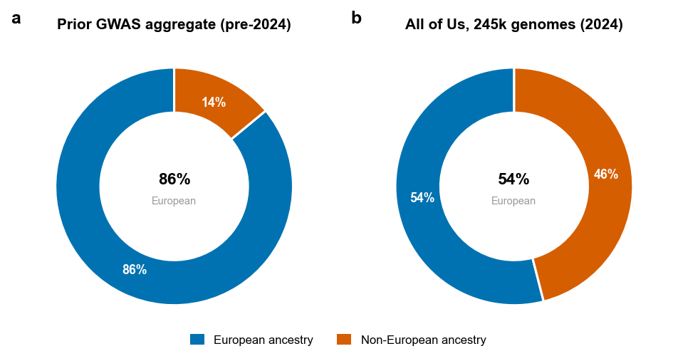
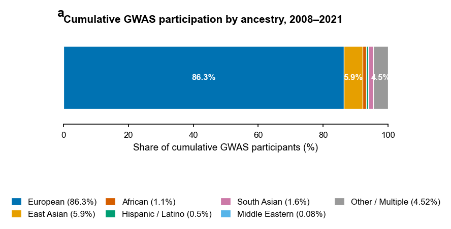
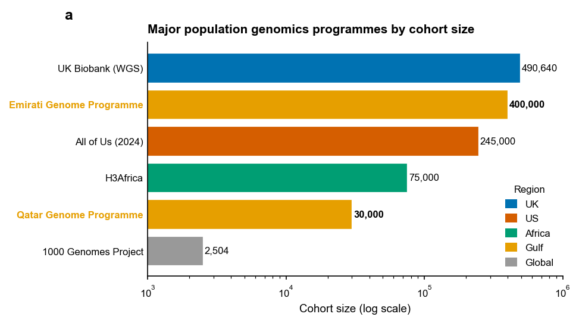

A critical look at ancestry bias in genome-wide studies and the risk scores built from them. Using the 2024 All of Us controversy, I argue that bias enters genomics in two ways: who gets sampled, and how their data is shown.
Critical analysis · GWAS · Polygenic risk scores · Health equity · Gulf focus

Genome-wide association studies link DNA to disease, and we have run them on millions of people. As of 2021, about 86% of those people were of European ancestry. The clinical product, the polygenic risk score, is several-fold less accurate outside that group. Middle Eastern and Gulf populations are barely represented at all.

Figure 1. Cumulative GWAS participation by ancestry, 2008 to 2021. European ancestry makes up roughly 86%, with most other groups close to the axis.
In 2024 the All of Us program published a landmark paper. It sequenced 245,000 genomes, about 46% from non-European ancestry, which is a real step toward closing the gap. The cover charts show that shift away from the old 86% European aggregate. Its headline figure was the problem. A UMAP coloured by self-described race made a continuous genetic landscape look like a handful of discrete races. The same paper also published an admixture plot showing the continuous reality, yet the UMAP became the press image, and geneticists pushed back within weeks. Bias entered not only through who was sampled, but through which figure reached the front page.
Even All of Us, with its 46% non-European cohort, includes almost no Middle Eastern ancestry. A polygenic risk score trained on it will not transfer cleanly to an Emirati patient. That is why the Emirati Genome Programme and the Qatar Genome Programme matter. Regional cohorts are a precondition for safe genomic medicine here, not a redundant copy of the international ones.

Figure 2. Major population genomics programmes by cohort size. The Gulf programmes are building national reference genomes that international datasets do not cover.
The talk closes with five recommendations: treat ancestry as a continuum rather than fixed categories, add a bias-and-equity review step for genomic publications, default Gulf clinical tools to local reference data, train clinicians to read risk scores as ancestry-dependent confidence intervals, and pre-register visualisation choices, not just analyses. The slides and the full reference list are in the repository.